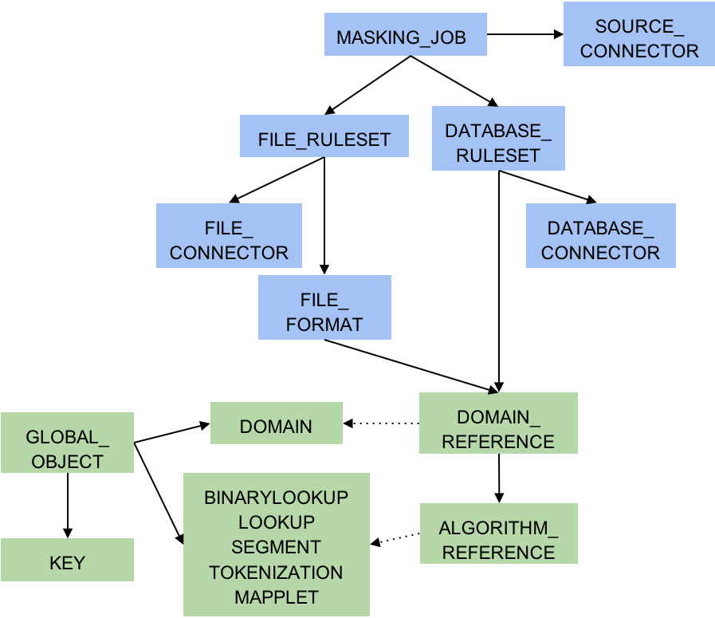
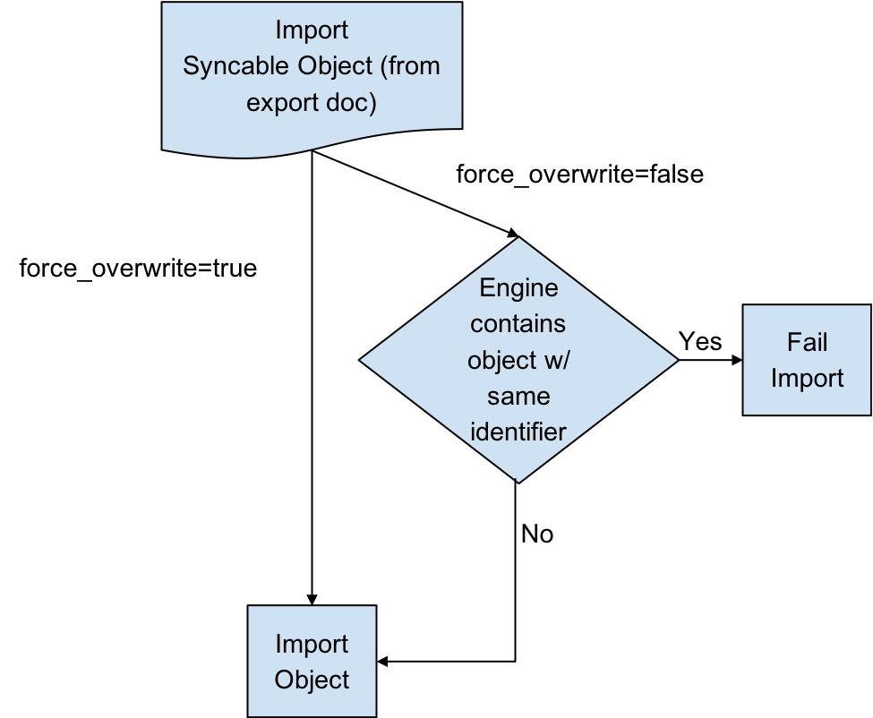

Masking API Call Concepts¶
Syncable object¶
Syncable objects are external representations of objects within the masking engine that can be exported from one engine and imported into another. EngineSync currently supports exporting a subset of algorithms, the encryption key and all the objects necessary for a masking job. Note: We do not currently support Mainframe masking jobs.
Object Identifiers and Types¶
EngineSync uses object identifiers to name unique objects within the engine. The follow object types are currently supported:
- DATABASE_CONNECTOR
- DATABASE_RULESET
- DOMAIN
- FILE_CONNECTOR
- FILE_FORMAT
- FILE_RULESET
- GLOBAL_OBJECT
- KEY
- Certain algorithms:
- BINARYLOOKUP
- CLEANSING
- DATE_SHIFT
- LOOKUP
- MIN_MAX
- REDACTION
- SEGMENT
- TOKENIZATION
- MAPPLET
- MASKING_JOB
- PROFILE_EXPRESSION
- PROFILE_JOB
- PROFILE_SET
The following lists the object types that are simply for the purpose of referencing a particular state of the exported object. These are not meant to be exported by request. The functions of these are further explained in the latter sections.
- ALGORITHM_REFERENCE
- DOMAIN_REFERENCE
- PROFILE_EXPRESSION_REFERENCE
- PROFILE_SET_REFERENCE
- SOURCE_DATABASE_CONNECTOR
- SOURCE_FILE_CONNECTOR
Dependencies¶
Most objects within the Masking Engine are compositional. In order to properly capture the behavior of a syncable object, you must export its dependencies along with the object itself. Fortunately, all the necessary dependencies are exported along with the object you request; thus, it is not something you need to keep track of and worry about.
Syncable Object dependencies relationship
Note: Green represents global objects (objects that are central to the entire engine), and blue represents objects that need to be a part of an environment

Object Revision Tracking¶
The revision hash is used to help you determine whether the behavior of a syncable object is the same between engines. Because objects within the Masking Engine are compositional, the behavior of an object is influenced by all of its dependencies. When a syncable object is listed or exported, the Masking Engine computes a revision_hash, which uniquely identifies the object’s behavior.
The revision_hash is a SHA1 hash that represents that object’s state, as well as the state of all objects it depends on. If two objects have the same revision hash, it is safe to assume that the behavior the objects is the same. However, it is possible for two objects to have the same behavior but have divergent revision hashes. For example, you could have two lookup algorithms with the same name, lookup file, and key, and they do not necessarily guaranteed to have the same revision hash.
Note
The revision_hash does not change when the password or the ssh key for either the FILE_CONNECTOR or DATABASE_CONNECTOR is updated. This is intentionally done because we do not export the password or the ssh key for security purposes. This allows users to update the password after import without changing the revision_hash. If a user is overriding a connector that already has a password set, the import does not reset the password and will leave the current, pre-import value.
Export Document¶
You can export one or more syncable objects that are listed in the /syncable-objects endpoint. The export document will include the set of objects that you requested for export and all of their dependencies that are required to properly import those objects into another engine.
The export document is exported as an opaque blob. Do not edit it outside of the Masking Engine.
Export Document Encryption¶
You can request that the export document be encrypted using a passphrase. Once the document is encrypted with the passphrase, the engine forgets the passphrase. You will need to provide the same passphrase during import to decrypt the document.
Digital Signature¶
In order to detect accidental or malicious modification of the export document, each document is digitally signed. If the export document does not match its expected digital signature, a Masking Engine will not import the document.
Overwrite¶
When an object to be imported has the same name as a currently existing object, importing it will cause the other object to be changed. Since this might not be intended, we offer a flag called force_overwrite. If force_overwrite is set to false and doing the import will change an existing object on the masking engine, we fail the import. This workflow is shown below.

Attempting to Import Identical Objects¶
The Masking Engine checks for the existence of the same object contents during the import of an object. If it is determined that the engine and the document being imported contain the same content, a result of SUCCESS will be returned without repeating the work of a full import. For example, importing an entire ruleset with hundreds of thousands of tables can be quite time consuming, and this should not be repeated if the same object already exists. If the object content matches and we skip the full import we note this in the application log.
Below is an example log statement when an identical database connector was imported:
2017-07-19 10:17:06,075 [http-nio-8282-exec-4] INFO
c.d.s.marshallers.SyncableMarshaller - Skipping import process for
{
"objectType": "DATABASE_CONNECTOR",
"id": {
"@type": "type.googleapis.com/IntegerIdentifier",
"id": 1
}
}, due to no discrepancy between the existing and importing object
¶
Depending on the object type, some define an object by a String (name) and some by an Integer (object id). Objects that can have the same name in multiple environments, such as connectors, rulesets, and masking jobs, are exported based on a unique id associated with them. Global objects, which do not have overlapping names, are exported and identified based on their names. Something to note here is that objects exported based on their ids will overwrite the object with the same name rather than the same id. This means that for all importing objects, we define the identity of an object to be based on the name in the same environment.
For example, if I export a database connector named testConnector with the following export object metadata:
{ "objectIdentifier": { "id": 5 }, "objectType": "DATABASE_CONNECTOR", "revisionHash": "68eaffef400e426520a5fcbb683419db3be53317" }
And then I import this object into some engine’s environment with the following list of connectors:
| id | connector name | more information |
|---|---|---|
| 1 | testConnector | ... |
| 5 | otherConnector | ... |
testConnector of id 1 will be overwritten, instead of otherConnector.
Overwrite of the Encryption Key¶
The global encryption key is somewhat special in that it always exists. Specifying force_overwrite=false will always fail to import the encryption key unless the encryption key has been previously synchronized using force_overwrite=true.
Specifying force_overwrite=true will always overwrite the engine’s encryption key with the contents of the encryption key in the export document.
Error handling¶
Export documents often have multiple objects to be imported at once. For example, when exporting a database ruleset, you will export both the database ruleset and the database connector since a ruleset depends on a connector.
The engine will import one object at a time, where the dependencies are imported first. If there is an error importing an object, the import process will abort and all objects that have successfully been imported during this request will get rolled back. For example, say you are importing objects A, B, and C. Import successfully imports A. During the import of B, the engine encounters an error. The import of A will roll back, and import of C will never execute. This will leave the engine in a state identical to the one it was in prior to the failed import.
Concurrent Sync Operations¶
To prevent race conditions with concurrent imports and jobs running, we currently do not allow concurrent import operations. We also do not allow imports while masking jobs or exports are running. It is best to do imports when a machine is not running jobs or other exports in order to guarantee that the final state of each of those operations is as expected. If they are done at the same time, the operations will fail with relevant error messages.
Global Objects¶
GLOBAL_OBJECT is a syncable object type that is a collection of all syncable algorithms, DOMAIN(s), PROFILE_SET(s), PROFILE_EXPRESSION(s) and KEY (global key). This represents objects in the Masking Engine that are available across all environments, and are not a part of any specific environment. When a user requests to export GLOBAL_OBJECT, every syncable algorithm, profile set, profile expression and domain on the engine will be exported as the bundle. If a DOMAIN, PROFILE_SET, or PROFILE_EXPRESSION has a dependency on a non-syncable algorithm, such as Mapping, it will not be exported.
This separation was added because global objects 1) containing large lookup files are projected to be time consuming and 2) are expected to be synchronized much less frequently than any masking job related metadata. Examples on how to use it will be available in the Example User Workflow section.
References Objects¶
As mentioned in the Global Objects section, we expect the users to synchronize global objects and masking jobs at different frequencies. To avoid any unnecessary export of large algorithms, any objects (MASKING_JOB, PROFILE_JOB, DATABASE_RULESET, FILE_FORMAT and FILE_RULESET) that have dependencies on algorithms will export just the references to the objects by default. This way we check whether the necessary dependency exists on the importing engine by comparing the references; if not, we fail the import execution with an appropriate message. Domains, profile sets, and profile expressions are the exception to this. Exporting any of these objects will also export the full algorithm.
On-The-Fly Masking Jobs¶
By definition, On-The-Fly (OTF) masking jobs work with a source environment/connector and a target environment/connector, masking the data from the source connector into that of the target connector. With masking jobs, a target environment_id is always required to specify which environment to import the job and its target connector. In addition to the target environment_id, OTF masking jobs require the specification of a source_environment_id into which to import the source connector. The source connector is copied into the specified source environment (source_environment_id ), and is represented by the SOURCE_DATABASE_CONNECTOR or
SOURCE_FILE_CONNECTOR for database and file masking jobs respectively in the export document. These source connectors are virtually identical to their DATABASE_CONNECTOR and FILE_CONNECTOR counterparts, but are represented differently in the OTF jobs to distinguish them from the target connector (i.e., DATABASE_CONNECTOR or FILE_CONNECTOR).
Circular Dependencies¶
It is possible to have a set of objects that end up depending on each other. This would be the case if a PROFILE_SET depended on a PROFILE_EXPRESSION that depended on a DOMAIN that depended on a REDACTION algorithm that depended on the original PROFILE_SET. The masking application will detect such scenarios on export and refuse to export such configurations.
This can be worked around by creating a second PROFILE_SET that contains PROFILE_EXPRESSIONS that do not depend on a DOMAIN that depends on a REDACTION algorithm. Simply ensure that the regular expressions are the same in the newly created PROFILE_EXPRESSIONs and assign the REDACTION algorithm to the new PROFILE_SET instead. The REDACTION algorithm will function the same but the dependency loop will have been broken.